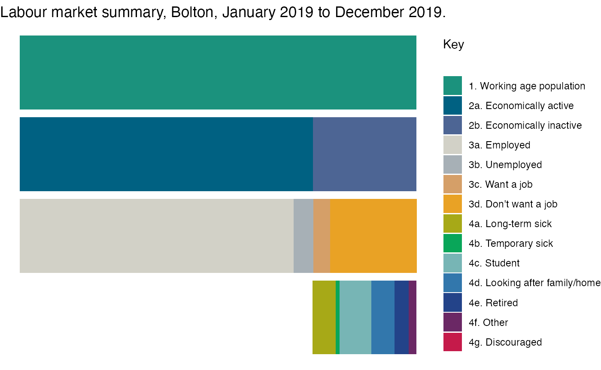
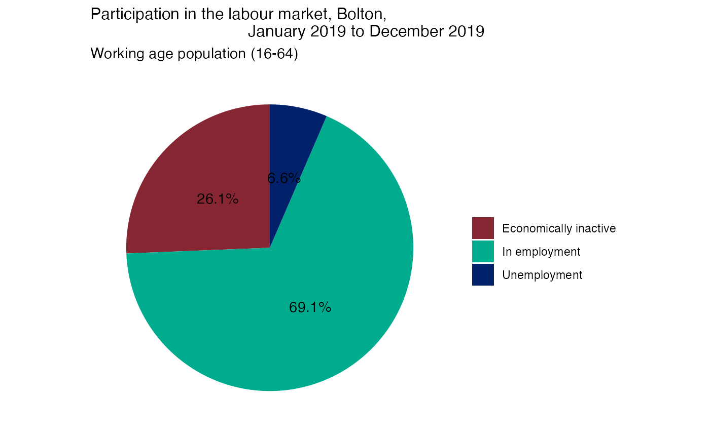
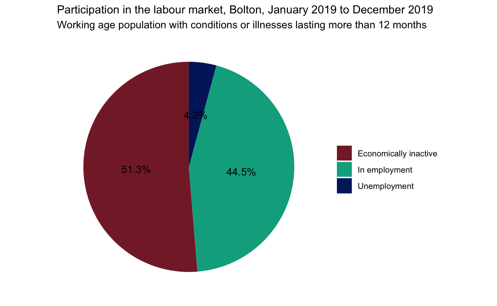
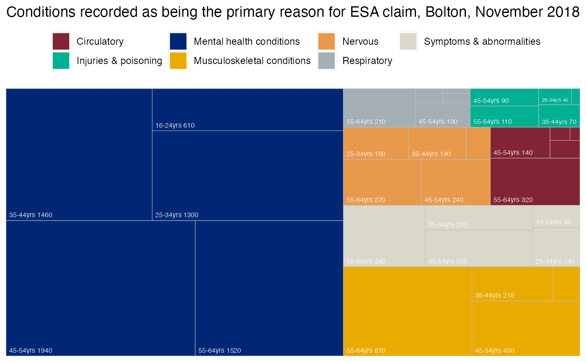

../docs/vignettes/Introduction-to-work-and-health-nomis-indicators.Rmd
Introduction-to-work-and-health-nomis-indicators.RmdThe nomisr package is an easy way to obtain data from Nomis. In this introduction you can see some of the functionality of the tool to create bespoke charts. These charts use Bolton as the area of interest.
The first step is to understanding what datasets are available in nomisr and this can be done using the nomis_get_info() function. If no particular id is inputted inside the brackets, the command will return all available datasets.
##
## Attaching package: 'dplyr'## The following objects are masked from 'package:stats':
##
## filter, lag## The following objects are masked from 'package:base':
##
## intersect, setdiff, setequal, unionnomis_data <- nomis_data_info() %>% select(id, description.value, name.value) head(nomis_data)
## # A tibble: 6 x 3
## id description.value name.value
## <chr> <chr> <chr>
## 1 NM_1_1 Records the number of people claiming Jo… Jobseeker's Allowance with r…
## 2 NM_2_1 A quartery count of claimants who were c… claimant count - age and dur…
## 3 NM_4_1 A monthly count of Jobseeker's Allowance… Jobseeker's Allowance by age…
## 4 NM_5_1 A midyear estimate of the workforce (the… claimant count denominators …
## 5 NM_6_1 A quarterly count of Jobseeker's Allowa… claimant count - occupation
## 6 NM_7_1 A quarterly count of Jobseeker's Allowa… claimant count - occupation,…This gives you a list of all available datasets in nomis. The list of ids/datasets used in this script are:
NM_17_5 (Annual Population Survey (APS): contains data on the working age population, economic activity & inactivity)
NM_134_1 (Benefit Claimants - Employment and Support Allowance (ESA): contains data on ICDGP condition by ESA)
If you wanted to look at more information on a specific dataset, you can add this inside the bracket of the nomis_get_info() function or use the nomis_get_metadata() function. Both of these will provide you with the different options (concepts) available for your chosen dataset.
NM_17_5 <- nomis_data_info("NM_17_5") tibble::glimpse(NM_17_5)
## Rows: 1
## Columns: 14
## $ agencyid <chr> "NOMIS"
## $ id <chr> "NM_17_5"
## $ uri <chr> "Nm-17d5"
## $ version <dbl> 1
## $ annotations.annotation <list> [<data.frame[9 x 2]>]
## $ components.attribute <list> [<data.frame[7 x 4]>]
## $ components.dimension <list> [<data.frame[4 x 3]>]
## $ components.primarymeasure.conceptref <chr> "OBS_VALUE"
## $ components.timedimension.codelist <chr> "CL_17_5_TIME"
## $ components.timedimension.conceptref <chr> "TIME"
## $ description.value <chr> "A residence based labour market…
## $ description.lang <chr> "en"
## $ name.value <chr> "annual population survey (varia…
## $ name.lang <chr> "en"NM_17_5 <- nomis_get_metadata("NM_17_5") head(NM_17_5)
## # A tibble: 5 x 3
## codelist conceptref isfrequencydimension
## <chr> <chr> <chr>
## 1 CL_17_5_GEOGRAPHY GEOGRAPHY false
## 2 CL_17_5_VARIABLE VARIABLE false
## 3 CL_17_5_MEASURES MEASURES false
## 4 CL_17_5_FREQ FREQ true
## 5 CL_17_5_TIME TIME falseAs mentioned previously, the nomis_get_info() and nomis_get_metadata() functions will provide you with a list of concepts that we can explore further to see what data is available e.g. dates, measures, geographies and variables. The concepts will differ depending on your chosen dataset, so it is a good idea to run the nomis_get_metadata() for each new dataset you are looking at.
To explore the concepts we need to specify this in the code. For example to explore the dates available in the APS dataset, we need to specify the concept as “time”.
NM_17_5_DATES <- nomis_get_metadata("NM_17_5", concept = "time") tail(NM_17_5_DATES)
## # A tibble: 6 x 3
## id label.en description.en
## <chr> <chr> <chr>
## 1 2018-09 Oct 2017-Sep 2018 Oct 2017-Sep 2018
## 2 2018-12 Jan 2018-Dec 2018 Jan 2018-Dec 2018
## 3 2019-03 Apr 2018-Mar 2019 Apr 2018-Mar 2019
## 4 2019-06 Jul 2018-Jun 2019 Jul 2018-Jun 2019
## 5 2019-09 Oct 2018-Sep 2019 Oct 2018-Sep 2019
## 6 2019-12 Jan 2019-Dec 2019 Jan 2019-Dec 2019Instead of referring to the ids for the specific dates you can also use the following options:
To explore the variables available in the APS dataset, we need to specify the concept as “variable”.
NM_17_5_VARIABLE <- nomis_get_metadata("NM_17_5", concept = "variable") head(NM_17_5_VARIABLE)
## # A tibble: 6 x 3
## id label.en description.en
## <chr> <chr> <chr>
## 1 1 % of all people aged 16+ who are m… % of all people aged 16+ who are ma…
## 2 2 % of all people aged 16+ who are f… % of all people aged 16+ who are fe…
## 3 3 % of all people aged 16+ who are a… % of all people aged 16+ who are ag…
## 4 4 % of males aged 16+ who are aged 1… % of males aged 16+ who are aged 16…
## 5 5 % of females aged 16+ who are aged… % of females aged 16+ who are aged …
## 6 6 % of aged 16-64 who are male % of aged 16-64 who are maleTo have a look at what geographies are available in the APS dataset, we need to specify the concept as “geography”.
NM_17_5_GEOG <- nomis_get_metadata("NM_17_5", concept = "geography") head(NM_17_5_GEOG)
## # A tibble: 6 x 4
## id parentCode label.en description.en
## <chr> <chr> <chr> <chr>
## 1 2092957697 <NA> United Kingdom United Kingdom
## 2 2092957698 <NA> Great Britain Great Britain
## 3 2092957699 <NA> England England
## 4 2092957700 2092957700 Wales Wales
## 5 2092957701 2092957701 Scotland Scotland
## 6 2092957702 2092957702 Northern Ireland Northern IrelandThis gives the top level geographies available but if we wanted to identify what type of geographies are available, we would need to use ‘type’ in the code.
NM_17_5_GEOG <- nomis_get_metadata("NM_17_5", concept = "geography", "type") head(NM_17_5_GEOG)
## # A tibble: 6 x 3
## id label.en description.en
## <chr> <chr> <chr>
## 1 TYPE83 jobcentre plus group as of April … jobcentre plus group as of April 2…
## 2 TYPE84 jobcentre plus district as of Apr… jobcentre plus district as of Apri…
## 3 TYPE225 major towns and cities major towns and cities
## 4 TYPE231 2011 scottish datazones 2011 scottish datazones
## 5 TYPE232 2011 scottish intermediate zones 2011 scottish intermediate zones
## 6 TYPE241 scottish parliamentary regions scottish parliamentary regionsIf you wanted all local authorities, combined authorities and regions in England, it is easier to create a vector which you can then feed into the nomis_get_data() function.
EN_LAs <- nomis_get_metadata(id = "NM_17_5", concept = "geography", type = "TYPE464")[1:326, ] %>% mutate(type = 464) EN_CAs <- nomis_get_metadata(id = "NM_17_5", concept = "geography", type = "TYPE442") %>% mutate(type = 442) EN_Regions <- nomis_get_metadata(id = "NM_17_5", concept = "geography", type = "TYPE480")[1:9, ] %>% mutate(type = 480) EN_Country <- nomis_get_metadata(id = "NM_17_5", concept = "geography", type = "TYPE499")[3, ] %>% mutate(type = 499) # use rbind to combine all of the above objects together to create a single object containing all geographies of interest and select only the id, parentCode, label.en and type EN_geos <- rbind(EN_LAs, EN_CAs, EN_Regions, EN_Country) %>% select(id, parentCode, label.en, type) print(EN_geos)
## # A tibble: 346 x 4
## id parentCode label.en type
## <chr> <chr> <chr> <dbl>
## 1 1946157057 2013265921 Darlington 464
## 2 1946157058 2013265921 County Durham 464
## 3 1946157059 2013265921 Hartlepool 464
## 4 1946157060 2013265921 Middlesbrough 464
## 5 1946157061 2013265921 Northumberland 464
## 6 1946157062 2013265921 Redcar and Cleveland 464
## 7 1946157063 2013265921 Stockton-on-Tees 464
## 8 1946157064 2013265921 Gateshead 464
## 9 1946157065 2013265921 Newcastle upon Tyne 464
## 10 1946157066 2013265921 North Tyneside 464
## # … with 336 more rows# Save it as a vector so can plug it into nomis_get_data function EN_geographies <- c(1946157057:1946157382, 1853882369:1853882372, 1853882374:1853882379, 2013265921:2013265929, 2092957699)
Now you have enough information to use the nomis_get_data function.
working_age_pop <- nomis_get_data(id = "NM_17_5", date = "latest", geography = EN_geographies, variable = 18, measures = c(20599, 21001, 21002, 21003))
## Parsed with column specification:
## cols(
## .default = col_character(),
## DATE_TYPECODE = col_double(),
## DATE_SORTORDER = col_double(),
## GEOGRAPHY = col_double(),
## GEOGRAPHY_TYPECODE = col_double(),
## GEOGRAPHY_SORTORDER = col_double(),
## VARIABLE = col_double(),
## VARIABLE_CODE = col_double(),
## VARIABLE_TYPECODE = col_double(),
## VARIABLE_SORTORDER = col_double(),
## MEASURES = col_double(),
## OBS_VALUE = col_double(),
## OBS_CONF = col_logical(),
## RECORD_OFFSET = col_double(),
## RECORD_COUNT = col_double()
## )## See spec(...) for full column specifications.print(working_age_pop)
## # A tibble: 1,384 x 28
## DATE DATE_NAME DATE_CODE DATE_TYPE DATE_TYPECODE DATE_SORTORDER GEOGRAPHY
## <chr> <chr> <chr> <chr> <dbl> <dbl> <dbl>
## 1 2019… Jan 2019… 2019-12 date 0 0 1.95e9
## 2 2019… Jan 2019… 2019-12 date 0 0 1.95e9
## 3 2019… Jan 2019… 2019-12 date 0 0 1.95e9
## 4 2019… Jan 2019… 2019-12 date 0 0 1.95e9
## 5 2019… Jan 2019… 2019-12 date 0 0 1.95e9
## 6 2019… Jan 2019… 2019-12 date 0 0 1.95e9
## 7 2019… Jan 2019… 2019-12 date 0 0 1.95e9
## 8 2019… Jan 2019… 2019-12 date 0 0 1.95e9
## 9 2019… Jan 2019… 2019-12 date 0 0 1.95e9
## 10 2019… Jan 2019… 2019-12 date 0 0 1.95e9
## # … with 1,374 more rows, and 21 more variables: GEOGRAPHY_NAME <chr>,
## # GEOGRAPHY_CODE <chr>, GEOGRAPHY_TYPE <chr>, GEOGRAPHY_TYPECODE <dbl>,
## # GEOGRAPHY_SORTORDER <dbl>, VARIABLE <dbl>, VARIABLE_NAME <chr>,
## # VARIABLE_CODE <dbl>, VARIABLE_TYPE <chr>, VARIABLE_TYPECODE <dbl>,
## # VARIABLE_SORTORDER <dbl>, MEASURES <dbl>, MEASURES_NAME <chr>,
## # OBS_VALUE <dbl>, OBS_STATUS <chr>, OBS_STATUS_NAME <chr>, OBS_CONF <lgl>,
## # OBS_CONF_NAME <chr>, URN <chr>, RECORD_OFFSET <dbl>, RECORD_COUNT <dbl>The following steps show how to make a stacked bar chart, which will show:
Stack 1: working age population
Stack 2: economically active and economically inactive
Stack 3: employed, unemployed, want a job, don’t want a job
Stack 4: economically active, long term sick, temp sick, student, looking after family/home, retired, other, discouraged
The data extracted is for all of the geographies outlined in the ‘EN_geographies’ vector, but the chart is filtered for Bolton only.
library(ggplot2) # FIRST STACK: Working age population # Need to extract the denominator from our previously created working_age_pop dataframe: first_stack <- working_age_pop %>% filter(MEASURES_NAME == "Denominator") %>% select(DATE_NAME, GEOGRAPHY, GEOGRAPHY_NAME, GEOGRAPHY_CODE, VARIABLE_NAME, OBS_VALUE) %>% mutate(grouping = 1) # replace na with 0 first_stack[is.na(first_stack)] <- 0 print(first_stack)
## # A tibble: 346 x 7
## DATE_NAME GEOGRAPHY GEOGRAPHY_NAME GEOGRAPHY_CODE VARIABLE_NAME OBS_VALUE
## <chr> <dbl> <chr> <chr> <chr> <dbl>
## 1 Jan 2019… 1.95e9 Darlington E06000005 Economic act… 63600
## 2 Jan 2019… 1.95e9 County Durham E06000047 Economic act… 324400
## 3 Jan 2019… 1.95e9 Hartlepool E06000001 Economic act… 56300
## 4 Jan 2019… 1.95e9 Middlesbrough E06000002 Economic act… 88400
## 5 Jan 2019… 1.95e9 Northumberland E06000057 Economic act… 183400
## 6 Jan 2019… 1.95e9 Redcar and Cl… E06000003 Economic act… 80500
## 7 Jan 2019… 1.95e9 Stockton-on-T… E06000004 Economic act… 120600
## 8 Jan 2019… 1.95e9 Gateshead E08000037 Economic act… 127800
## 9 Jan 2019… 1.95e9 Newcastle upo… E08000021 Economic act… 199600
## 10 Jan 2019… 1.95e9 North Tyneside E08000022 Economic act… 127600
## # … with 336 more rows, and 1 more variable: grouping <dbl># SECOND STACK: Economically active and economically inactive # Extract economically active variable: econ_active <- nomis_get_data(id = "NM_17_5", date = "latest", geography = EN_geographies, variable = 84, measures = c(20599, 21001, 21002, 21003)) %>% filter(MEASURES_NAME == "Denominator") %>% select(-VARIABLE_NAME) %>% mutate(VARIABLE_NAME = "economically active") %>% select(DATE_NAME, GEOGRAPHY, GEOGRAPHY_NAME, GEOGRAPHY_CODE, VARIABLE_NAME, OBS_VALUE)
## Parsed with column specification:
## cols(
## .default = col_character(),
## DATE_TYPECODE = col_double(),
## DATE_SORTORDER = col_double(),
## GEOGRAPHY = col_double(),
## GEOGRAPHY_TYPECODE = col_double(),
## GEOGRAPHY_SORTORDER = col_double(),
## VARIABLE = col_double(),
## VARIABLE_CODE = col_double(),
## VARIABLE_TYPECODE = col_double(),
## VARIABLE_SORTORDER = col_double(),
## MEASURES = col_double(),
## OBS_VALUE = col_double(),
## OBS_CONF = col_logical(),
## RECORD_OFFSET = col_double(),
## RECORD_COUNT = col_double()
## )## See spec(...) for full column specifications.# Extract economically inactive variable: econ_inactive <- nomis_get_data(id = "NM_17_5", date = "latest", geography = EN_geographies, variable = 111, measures = c(20599, 21001, 21002, 21003)) %>% filter(MEASURES_NAME == "Numerator") %>% select(DATE_NAME, GEOGRAPHY, GEOGRAPHY_NAME, GEOGRAPHY_CODE, VARIABLE_NAME, OBS_VALUE)
## Parsed with column specification:
## cols(
## .default = col_character(),
## DATE_TYPECODE = col_double(),
## DATE_SORTORDER = col_double(),
## GEOGRAPHY = col_double(),
## GEOGRAPHY_TYPECODE = col_double(),
## GEOGRAPHY_SORTORDER = col_double(),
## VARIABLE = col_double(),
## VARIABLE_CODE = col_double(),
## VARIABLE_TYPECODE = col_double(),
## VARIABLE_SORTORDER = col_double(),
## MEASURES = col_double(),
## OBS_VALUE = col_double(),
## OBS_CONF = col_logical(),
## RECORD_OFFSET = col_double(),
## RECORD_COUNT = col_double()
## )
## See spec(...) for full column specifications.# Bind the econ_active and econ_inactive datasets together to create the second stack: second_stack <- rbind(econ_active, econ_inactive) %>% arrange(GEOGRAPHY) %>% mutate(grouping = 2) # replace na with 0 second_stack[is.na(second_stack)] <- 0 print(second_stack)
## # A tibble: 692 x 7
## DATE_NAME GEOGRAPHY GEOGRAPHY_NAME GEOGRAPHY_CODE VARIABLE_NAME OBS_VALUE
## <chr> <dbl> <chr> <chr> <chr> <dbl>
## 1 Jan 2019… 1.85e9 Greater Manch… E47000001 economically… 1367400
## 2 Jan 2019… 1.85e9 Greater Manch… E47000001 % who are ec… 417500
## 3 Jan 2019… 1.85e9 Sheffield Cit… E47000002 economically… 679000
## 4 Jan 2019… 1.85e9 Sheffield Cit… E47000002 % who are ec… 202400
## 5 Jan 2019… 1.85e9 West Yorkshire E47000003 economically… 1100200
## 6 Jan 2019… 1.85e9 West Yorkshire E47000003 % who are ec… 351700
## 7 Jan 2019… 1.85e9 Liverpool Cit… E47000004 economically… 735000
## 8 Jan 2019… 1.85e9 Liverpool Cit… E47000004 % who are ec… 231500
## 9 Jan 2019… 1.85e9 Tees Valley E47000006 economically… 300800
## 10 Jan 2019… 1.85e9 Tees Valley E47000006 % who are ec… 108600
## # … with 682 more rows, and 1 more variable: grouping <dbl># THIRD STACK: Employed, unemployed, want a job, don't want a job # Extract employed variable: employed <- nomis_get_data(id = "NM_17_5", date = "latest", geography = EN_geographies, variable = 45, measures = c(20599, 21001, 21002, 21003)) %>% filter(MEASURES_NAME == "Numerator") %>% select(DATE_NAME, GEOGRAPHY, GEOGRAPHY_NAME, GEOGRAPHY_CODE, VARIABLE_NAME, OBS_VALUE)
## Parsed with column specification:
## cols(
## .default = col_character(),
## DATE_TYPECODE = col_double(),
## DATE_SORTORDER = col_double(),
## GEOGRAPHY = col_double(),
## GEOGRAPHY_TYPECODE = col_double(),
## GEOGRAPHY_SORTORDER = col_double(),
## VARIABLE = col_double(),
## VARIABLE_CODE = col_double(),
## VARIABLE_TYPECODE = col_double(),
## VARIABLE_SORTORDER = col_double(),
## MEASURES = col_double(),
## OBS_VALUE = col_double(),
## OBS_CONF = col_logical(),
## RECORD_OFFSET = col_double(),
## RECORD_COUNT = col_double()
## )
## See spec(...) for full column specifications.# Extract unemployed variable: unemployed <- nomis_get_data(id = "NM_17_5", date = "latest", geography = EN_geographies, variable = 84, measures = c(20599, 21001, 21002, 21003)) %>% filter(MEASURES_NAME == "Numerator") %>% select(DATE_NAME, GEOGRAPHY, GEOGRAPHY_NAME, GEOGRAPHY_CODE, VARIABLE_NAME, OBS_VALUE)
## Parsed with column specification:
## cols(
## .default = col_character(),
## DATE_TYPECODE = col_double(),
## DATE_SORTORDER = col_double(),
## GEOGRAPHY = col_double(),
## GEOGRAPHY_TYPECODE = col_double(),
## GEOGRAPHY_SORTORDER = col_double(),
## VARIABLE = col_double(),
## VARIABLE_CODE = col_double(),
## VARIABLE_TYPECODE = col_double(),
## VARIABLE_SORTORDER = col_double(),
## MEASURES = col_double(),
## OBS_VALUE = col_double(),
## OBS_CONF = col_logical(),
## RECORD_OFFSET = col_double(),
## RECORD_COUNT = col_double()
## )
## See spec(...) for full column specifications.# Extract want a job variable: want_job <- nomis_get_data(id = "NM_17_5", date = "latest", geography = EN_geographies, variable = 1487, measures = c(20599, 21001, 21002, 21003)) %>% filter(MEASURES_NAME == "Numerator") %>% select(DATE_NAME, GEOGRAPHY, GEOGRAPHY_NAME, GEOGRAPHY_CODE, VARIABLE_NAME, OBS_VALUE)
## Parsed with column specification:
## cols(
## .default = col_character(),
## DATE_TYPECODE = col_double(),
## DATE_SORTORDER = col_double(),
## GEOGRAPHY = col_double(),
## GEOGRAPHY_TYPECODE = col_double(),
## GEOGRAPHY_SORTORDER = col_double(),
## VARIABLE = col_double(),
## VARIABLE_CODE = col_double(),
## VARIABLE_TYPECODE = col_double(),
## VARIABLE_SORTORDER = col_double(),
## MEASURES = col_double(),
## OBS_VALUE = col_double(),
## OBS_CONF = col_logical(),
## RECORD_OFFSET = col_double(),
## RECORD_COUNT = col_double()
## )
## See spec(...) for full column specifications.# Extract don't want a job variable: dont_want_job <- nomis_get_data(id = "NM_17_5", date = "latest", geography = EN_geographies, variable = 1488, measures = c(20599, 21001, 21002, 21003)) %>% filter(MEASURES_NAME == "Numerator") %>% select(DATE_NAME, GEOGRAPHY, GEOGRAPHY_NAME, GEOGRAPHY_CODE, VARIABLE_NAME, OBS_VALUE)
## Parsed with column specification:
## cols(
## .default = col_character(),
## DATE_TYPECODE = col_double(),
## DATE_SORTORDER = col_double(),
## GEOGRAPHY = col_double(),
## GEOGRAPHY_TYPECODE = col_double(),
## GEOGRAPHY_SORTORDER = col_double(),
## VARIABLE = col_double(),
## VARIABLE_CODE = col_double(),
## VARIABLE_TYPECODE = col_double(),
## VARIABLE_SORTORDER = col_double(),
## MEASURES = col_double(),
## OBS_VALUE = col_double(),
## OBS_CONF = col_logical(),
## RECORD_OFFSET = col_double(),
## RECORD_COUNT = col_double()
## )
## See spec(...) for full column specifications.# Bind datasets together to create third stack: third_stack <- rbind(employed, unemployed, want_job, dont_want_job) %>% arrange(GEOGRAPHY) %>% mutate(grouping = 3) # replace na with 0 third_stack[is.na(third_stack)] <- 0 print(third_stack)
## # A tibble: 1,384 x 7
## DATE_NAME GEOGRAPHY GEOGRAPHY_NAME GEOGRAPHY_CODE VARIABLE_NAME OBS_VALUE
## <chr> <dbl> <chr> <chr> <chr> <dbl>
## 1 Jan 2019… 1.85e9 Greater Manch… E47000001 Employment r… 1297600
## 2 Jan 2019… 1.85e9 Greater Manch… E47000001 Unemployment… 69800
## 3 Jan 2019… 1.85e9 Greater Manch… E47000001 % of economi… 76000
## 4 Jan 2019… 1.85e9 Greater Manch… E47000001 % of economi… 341500
## 5 Jan 2019… 1.85e9 Sheffield Cit… E47000002 Employment r… 642900
## 6 Jan 2019… 1.85e9 Sheffield Cit… E47000002 Unemployment… 36100
## 7 Jan 2019… 1.85e9 Sheffield Cit… E47000002 % of economi… 56900
## 8 Jan 2019… 1.85e9 Sheffield Cit… E47000002 % of economi… 145500
## 9 Jan 2019… 1.85e9 West Yorkshire E47000003 Employment r… 1050100
## 10 Jan 2019… 1.85e9 West Yorkshire E47000003 Unemployment… 50100
## # … with 1,374 more rows, and 1 more variable: grouping <dbl># FOURTH STACK: Economically active, LT sick, temp sick, student, looking after family/home, retired, other, discouraged # For the fourth stack you don't want the econ active shown so bind with missing variable name dataset: econ_active_missing <- econ_active %>% mutate(Active = "") %>% select(DATE_NAME: GEOGRAPHY_CODE, Active, OBS_VALUE) %>% rename(VARIABLE_NAME = Active) # Extract reasons variables: reasons <- nomis_get_data(id = "NM_17_5", date = "latest", geography = EN_geographies, variable = c(1493:1499), measures = c(20599, 21001, 21002, 21003)) %>% filter(MEASURES_NAME == "Numerator") %>% select(DATE_NAME, GEOGRAPHY, GEOGRAPHY_NAME, GEOGRAPHY_CODE, VARIABLE_NAME, OBS_VALUE)
## Parsed with column specification:
## cols(
## .default = col_character(),
## DATE_TYPECODE = col_double(),
## DATE_SORTORDER = col_double(),
## GEOGRAPHY = col_double(),
## GEOGRAPHY_TYPECODE = col_double(),
## GEOGRAPHY_SORTORDER = col_double(),
## VARIABLE = col_double(),
## VARIABLE_CODE = col_double(),
## VARIABLE_TYPECODE = col_double(),
## VARIABLE_SORTORDER = col_double(),
## MEASURES = col_double(),
## OBS_VALUE = col_double(),
## OBS_CONF = col_logical(),
## RECORD_OFFSET = col_double(),
## RECORD_COUNT = col_double()
## )
## See spec(...) for full column specifications.# Bind two datasets together to create the fourth stack: fourth_stack <- rbind(econ_active_missing, reasons) %>% arrange(GEOGRAPHY) %>% mutate(grouping = 4) # replace na with 0 fourth_stack[is.na(fourth_stack)] <- 0 print(fourth_stack)
## # A tibble: 2,768 x 7
## DATE_NAME GEOGRAPHY GEOGRAPHY_NAME GEOGRAPHY_CODE VARIABLE_NAME OBS_VALUE
## <chr> <dbl> <chr> <chr> <chr> <dbl>
## 1 Jan 2019… 1.85e9 Greater Manch… E47000001 "" 1367400
## 2 Jan 2019… 1.85e9 Greater Manch… E47000001 "% of econom… 124200
## 3 Jan 2019… 1.85e9 Greater Manch… E47000001 "% of econom… 97100
## 4 Jan 2019… 1.85e9 Greater Manch… E47000001 "% of econom… 7900
## 5 Jan 2019… 1.85e9 Greater Manch… E47000001 "% of econom… 108100
## 6 Jan 2019… 1.85e9 Greater Manch… E47000001 "% of econom… 2100
## 7 Jan 2019… 1.85e9 Greater Manch… E47000001 "% of econom… 40800
## 8 Jan 2019… 1.85e9 Greater Manch… E47000001 "% of econom… 37300
## 9 Jan 2019… 1.85e9 Sheffield Cit… E47000002 "" 679000
## 10 Jan 2019… 1.85e9 Sheffield Cit… E47000002 "% of econom… 54200
## # … with 2,758 more rows, and 1 more variable: grouping <dbl># Have all the data to make the stacked bar chart - now to bind the datasets together stacked_bar <- rbind(first_stack, second_stack, third_stack, fourth_stack) %>% arrange(desc(grouping, OBS_VALUE)) ## Filter to area of interest - Enter geographical code for area of interest e.g. "E08000001" for Bolton area_of_interest_code <- "E08000001" # Filter to area: data <- stacked_bar %>% filter(GEOGRAPHY_CODE == area_of_interest_code) %>% mutate(Key = VARIABLE_NAME) %>% arrange(VARIABLE_NAME) area_of_interest_name <- as.character(data[1,"GEOGRAPHY_NAME"]) # Sort out category names: data$Key[data$Key == "Economic activity rate - aged 16-64"] <- "1. Working age population" data$Key[data$Key == "% who are economically inactive - aged 16-64"] <- "2b. Economically inactive" data$Key[data$Key == "economically active"] <- "2a. Economically active" data$Key[data$Key == "Employment rate - aged 16-64"] <- "3a. Employed" data$Key[data$Key == "Unemployment rate - aged 16-64"] <- "3b. Unemployed" data$Key[data$Key == "% of economically inactive who want a job"] <- "3c. Want a job" data$Key[data$Key == "% of economically inactive who do not want a job"] <- "3d. Don't want a job" data$Key[data$Key == "% of economically inactive long-term sick"] <- "4a. Long-term sick" data$Key[data$Key == "% of economically inactive temporary sick"] <- "4b. Temporary sick" data$Key[data$Key == "% of economically inactive student"] <- "4c. Student" data$Key[data$Key == "% of economically inactive looking after family/home"] <- "4d. Looking after family/home" data$Key[data$Key == "% of economically inactive retired"] <- "4e. Retired" data$Key[data$Key == "% of economically inactive other"] <- "4f. Other" data$Key[data$Key == "% of economically inactive discouraged"] <- "4g. Discouraged" # Get 15 colours - first one is white as you don't want it shown on the chart: colours <- c("#FFFFFF", "#1B927D", "#006182", "#4D6594", "#D2D1C7", "#A7B0B6", "#D59F68", "#E9A225", "#A7A917", "#09A659", "#77B5B5", "#3277AC", "#234389", "#6B2865", "#C51A4A") # Plot chart p <- ggplot(data, aes(fill=Key, y=OBS_VALUE, x=grouping)) + theme_void() + theme(axis.line.x = element_blank(), axis.title.x = element_blank(), axis.title.y = element_blank(), axis.text = element_blank(), axis.ticks = element_blank(), plot.title = element_text(hjust = 0), plot.caption = element_text(hjust = 0)) + geom_bar(position=position_stack(reverse = TRUE), stat="identity") + scale_fill_manual(values = colours) + coord_flip() + scale_x_reverse() + labs(title = paste0("Labour market summary, ", area_of_interest_name, ", January 2019 to December 2019.")) + theme(legend.position = "right") p

The following steps show how to make pie charts, which will show:
Pie 1: Economic activity of ‘Healthy’ working age population (16-64 years)
Pie 2: Economic activity of 16+ population with health conditions & illnesses lasting more than 12 months
The data extracted is for all of the geographies outlined in the ‘EN_geographies’ vector, but the chart is filtered for Bolton only.
# Economic activity of the 'healthy' working age population (16-64): Pie 1 # Save variables needed as a vector: pie_vars <- NM_17_5_VARIABLE %>% mutate(pie = if_else(id == 45, 1, if_else(id == 84, 1, if_else(id == 111, 1, if_else(id == 1715, 1, if_else(id == 1716, 1, if_else(id == 1717, 1, 0 ))))))) %>% filter(pie == 1) %>% select(id) %>% pull(id) # get data for pie pie_data <- nomis_get_data(id = "NM_17_5", date = "latest", geography = EN_geographies, variable = pie_vars, measures = c(20599, 21001, 21002, 21003)) %>% select(DATE_NAME, GEOGRAPHY, GEOGRAPHY_NAME, GEOGRAPHY_CODE, VARIABLE_NAME, VARIABLE_CODE, MEASURES_NAME, OBS_VALUE)
## Parsed with column specification:
## cols(
## .default = col_character(),
## DATE_TYPECODE = col_double(),
## DATE_SORTORDER = col_double(),
## GEOGRAPHY = col_double(),
## GEOGRAPHY_TYPECODE = col_double(),
## GEOGRAPHY_SORTORDER = col_double(),
## VARIABLE = col_double(),
## VARIABLE_CODE = col_double(),
## VARIABLE_TYPECODE = col_double(),
## VARIABLE_SORTORDER = col_double(),
## MEASURES = col_double(),
## OBS_VALUE = col_double(),
## OBS_CONF = col_logical(),
## RECORD_OFFSET = col_double(),
## RECORD_COUNT = col_double()
## )## See spec(...) for full column specifications.# replace na with 0 pie_data[is.na(pie_data)] <- 0 # create the groupings for the two pie charts: pie_data <- pie_data %>% filter(MEASURES_NAME == "Variable") %>% mutate(group = VARIABLE_CODE, group = as.numeric(group)) pie_data <- pie_data[order(pie_data$group),] pie_data$group[pie_data$group == 45] <- 1 pie_data$group[pie_data$group == 84] <- 1 pie_data$group[pie_data$group == 111] <- 1 pie_data$group[pie_data$group == 1715] <- 2 pie_data$group[pie_data$group == 1716] <- 2 pie_data$group[pie_data$group == 1717] <- 2 pie_data <- pie_data %>% arrange(GEOGRAPHY_NAME) %>% select(DATE_NAME, GEOGRAPHY, GEOGRAPHY_NAME, GEOGRAPHY_CODE, VARIABLE_NAME, OBS_VALUE, group) print(pie_data)
## # A tibble: 2,076 x 7
## DATE_NAME GEOGRAPHY GEOGRAPHY_NAME GEOGRAPHY_CODE VARIABLE_NAME OBS_VALUE
## <chr> <dbl> <chr> <chr> <chr> <dbl>
## 1 Jan 2019… 1.95e9 Adur E07000223 Employment r… 90.4
## 2 Jan 2019… 1.95e9 Adur E07000223 Unemployment… 0
## 3 Jan 2019… 1.95e9 Adur E07000223 % who are ec… 9.6
## 4 Jan 2019… 1.95e9 Adur E07000223 % In employm… 47.4
## 5 Jan 2019… 1.95e9 Adur E07000223 % Unemployed… 0
## 6 Jan 2019… 1.95e9 Adur E07000223 % Inactive w… 52.6
## 7 Jan 2019… 1.95e9 Allerdale E07000026 Employment r… 83.7
## 8 Jan 2019… 1.95e9 Allerdale E07000026 Unemployment… 3.4
## 9 Jan 2019… 1.95e9 Allerdale E07000026 % who are ec… 13.3
## 10 Jan 2019… 1.95e9 Allerdale E07000026 % In employm… 49.6
## # … with 2,066 more rows, and 1 more variable: group <dbl># Have all the data to create the pie charts # Filter to area of interest and first pie data: pie1_data <- pie_data %>% filter(GEOGRAPHY_CODE == area_of_interest_code, group == 1) %>% mutate(Key = VARIABLE_NAME) area_of_interest_name <- as.character(pie1_data[1,"GEOGRAPHY_NAME"]) # Sort out category names pie1_data$Key[pie1_data$Key == "% who are economically inactive - aged 16-64"] <- "Economically inactive" pie1_data$Key[pie1_data$Key == "Employment rate - aged 16-64"] <- "In employment" pie1_data$Key[pie1_data$Key == "Unemployment rate - aged 16-64"] <- "Unemployment" pie1_data <- pie1_data %>% arrange(Key) #creating a pie chart using ggplot pie1 <- ggplot(pie1_data, aes(x = "", y = OBS_VALUE, fill = Key))+ geom_bar(stat="identity", width=1) pie1 = pie1 + coord_polar("y", start=0) + geom_text(aes(label = paste0(OBS_VALUE, "%")), position = position_stack(vjust = 0.5)) # Choose colours for the slides pie1 = pie1 + scale_fill_manual(values=c("#862633","#00AB8E","#01216A")) pie1 = pie1 + labs(x = NULL, y = NULL, fill = NULL, title = (paste0("Participation in the labour market, ", area_of_interest_name, ", January 2019 to December 2019")), subtitle = "Working age population (16-64)") # Tidy up the theme pie1 = pie1 + theme_classic() + theme(axis.line = element_blank(), axis.text = element_blank(), axis.ticks = element_blank(), plot.title = element_text(hjust = 0, size=12), plot.subtitle = element_text(hjust = 0)) pie1

# Economic activity of the 16+ population with health conditions & illnesses lasting more than 12 months: Pie 2 #Filter to correct area and second pie data pie2_data <- pie_data %>% filter(GEOGRAPHY_CODE == area_of_interest_code, group == 2) %>% mutate(Key = VARIABLE_NAME) area_of_interest_name <- as.character(pie2_data[1,"GEOGRAPHY_NAME"]) # Sort out category names: pie2_data$Key[pie2_data$Key == "% In employment with health conditions or illnesses lasting more than 12 months (aged 16+)"] <- "In employment" pie2_data$Key[pie2_data$Key == "% Inactive with health conditions or illnesses lasting more than 12 months (aged 16+)"] <- "Economically inactive" pie2_data$Key[pie2_data$Key == "% Unemployed with health conditions or illnesses lasting more than 12 months (aged 16+)"] <- "Unemployment" pie2_data <- pie2_data %>% arrange(Key) #creating a pie chart using ggplot pie2 <- ggplot(pie2_data, aes(x = "", y = OBS_VALUE, fill = Key))+ geom_bar(stat="identity", width=1) pie2 = pie2 + coord_polar("y", start=0) + geom_text(aes(label = paste0(OBS_VALUE, "%")), position = position_stack(vjust = 0.5)) #using phe colours for the slices pie2 = pie2 + scale_fill_manual(values=c("#862633","#00AB8E","#01216A")) pie2 = pie2 + labs(x = NULL, y = NULL, fill = NULL, title = (paste0("Participation in the labour market, ", area_of_interest_name, ", January 2019 to December 2019")), subtitle = "Working age population with conditions or illnesses lasting more than 12 months") # Tidy up the theme pie2 = pie2 + theme_classic() + theme(axis.line = element_blank(), axis.text = element_blank(), axis.ticks = element_blank(), plot.title = element_text(hjust = 0, size=12), plot.subtitle = element_text(hjust = 0)) pie2

The following steps show how to create a treemap:
The data extracted is for all of the geographies outlined in the ‘EN_geographies’ vector, but the chart is filtered for Bolton only.
# Step 1: Contribution of conditions to total ESA claims # get ESA data by condition for latest data, call object ESA_data_condition # Note: the 'totals' (ID = 0) isn't the sum of the values in the dataset - hence hasn't been included in the code: ESA_data_condition <- nomis_get_data(id = "NM_134_1", date = "latest", geography = EN_geographies, icdgp_condition = c(1:23), sex = 7, esa_phase = 0, payment_type = 0, ethnic_group = 0, age = c(1:8), duration = 0, measures = 20100)
## Parsed with column specification:
## cols(
## .default = col_double(),
## DATE = col_character(),
## DATE_NAME = col_character(),
## DATE_CODE = col_character(),
## DATE_TYPE = col_character(),
## GEOGRAPHY_NAME = col_character(),
## GEOGRAPHY_CODE = col_character(),
## GEOGRAPHY_TYPE = col_character(),
## ICDGP_CONDITION_NAME = col_character(),
## ICDGP_CONDITION_TYPE = col_character(),
## SEX_NAME = col_character(),
## SEX_TYPE = col_character(),
## ESA_PHASE_NAME = col_character(),
## ESA_PHASE_TYPE = col_character(),
## PAYMENT_TYPE_NAME = col_character(),
## PAYMENT_TYPE_TYPE = col_character(),
## ETHNIC_GROUP_NAME = col_character(),
## ETHNIC_GROUP_TYPE = col_character(),
## AGE_NAME = col_character(),
## AGE_TYPE = col_character(),
## DURATION_NAME = col_character()
## # ... with 7 more columns
## )## See spec(...) for full column specifications.# replace na with 0 ESA_data_condition[is.na(ESA_data_condition)] <- 0 # Calculate total for each condition (i.e. all ages) ESA_data_condition <- ESA_data_condition %>% group_by(GEOGRAPHY_CODE, ICDGP_CONDITION) %>% mutate(total = sum(OBS_VALUE)) %>% select(DATE_NAME, GEOGRAPHY: GEOGRAPHY_CODE, ICDGP_CONDITION: ICDGP_CONDITION_NAME, SEX_NAME, total) %>% distinct(total, .keep_all = TRUE) # Total for each area ESA_total <- ESA_data_condition %>% group_by(GEOGRAPHY) %>% mutate(tot = sum(total)) %>% select(GEOGRAPHY: GEOGRAPHY_CODE, tot) %>% distinct(tot, .keep_all = TRUE) # Link the two tables together to calculate the percentage contributed ESA_total_final <- left_join(ESA_data_condition, ESA_total, by = c("GEOGRAPHY_CODE", "GEOGRAPHY_NAME")) %>% select(DATE_NAME: ICDGP_CONDITION_NAME, SEX_NAME, total, tot) %>% mutate(PERC = total / tot *100, PERC = round(PERC, 1)) %>% arrange(GEOGRAPHY_CODE, desc(PERC)) print(ESA_total_final)
## # A tibble: 7,958 x 10
## # Groups: GEOGRAPHY_CODE, ICDGP_CONDITION [7,958]
## DATE_NAME GEOGRAPHY.x GEOGRAPHY_NAME GEOGRAPHY_CODE ICDGP_CONDITION
## <chr> <dbl> <chr> <chr> <dbl>
## 1 November… 1946157059 Hartlepool E06000001 5
## 2 November… 1946157059 Hartlepool E06000001 13
## 3 November… 1946157059 Hartlepool E06000001 18
## 4 November… 1946157059 Hartlepool E06000001 6
## 5 November… 1946157059 Hartlepool E06000001 9
## 6 November… 1946157059 Hartlepool E06000001 10
## 7 November… 1946157059 Hartlepool E06000001 2
## 8 November… 1946157059 Hartlepool E06000001 19
## 9 November… 1946157059 Hartlepool E06000001 21
## 10 November… 1946157059 Hartlepool E06000001 11
## # … with 7,948 more rows, and 5 more variables: ICDGP_CONDITION_NAME <chr>,
## # SEX_NAME <chr>, total <dbl>, tot <dbl>, PERC <dbl># Remove factors from the above table & rank them based on highest to lowest # Can then use this as a lookup for the treemap and which conditions to plot ESA_condition_rank <- ESA_total_final %>% filter(ICDGP_CONDITION != 21) %>% arrange(GEOGRAPHY_CODE, desc(PERC)) %>% group_by(GEOGRAPHY_CODE) %>% mutate(rank = 1:n()) %>% select(GEOGRAPHY_CODE, GEOGRAPHY_NAME, ICDGP_CONDITION: ICDGP_CONDITION_NAME, rank) print(ESA_condition_rank)
## # A tibble: 7,612 x 5
## # Groups: GEOGRAPHY_CODE [346]
## GEOGRAPHY_CODE GEOGRAPHY_NAME ICDGP_CONDITION ICDGP_CONDITION_NAME rank
## <chr> <chr> <dbl> <chr> <int>
## 1 E06000001 Hartlepool 5 Mental and behavioural d… 1
## 2 E06000001 Hartlepool 13 Diseases of the musculos… 2
## 3 E06000001 Hartlepool 18 Symptoms, signs and abno… 3
## 4 E06000001 Hartlepool 6 Diseases of the nervous … 4
## 5 E06000001 Hartlepool 9 Diseases of the circulat… 5
## 6 E06000001 Hartlepool 10 Diseases of the respirat… 6
## 7 E06000001 Hartlepool 2 Neoplasms 7
## 8 E06000001 Hartlepool 19 Injury, poisoning and ce… 8
## 9 E06000001 Hartlepool 11 Diseases of the digestiv… 9
## 10 E06000001 Hartlepool 4 Endocrine, nutritional a… 10
## # … with 7,602 more rows# Step 2: Extract conditions to map on to treemap and create appropriate age-groups # get ESA data by condition for latest data # Don't need the total (ID=0), factors (ID=21), Codes for special purposes (ID=22), Claimants without any diagnosis (ID=23) treemap_data <- nomis_get_data(id = "NM_134_1", date = "latest", geography = EN_geographies, icdgp_condition = c(1:19), sex = 7, esa_phase = 0, payment_type = 0, ethnic_group = 0, age = c(1:8), duration = 0, measures = 20100) %>% select(DATE_NAME, GEOGRAPHY: GEOGRAPHY_CODE, ICDGP_CONDITION: ICDGP_CONDITION_NAME, SEX_NAME, AGE:AGE_NAME, OBS_VALUE)
## Parsed with column specification:
## cols(
## .default = col_double(),
## DATE = col_character(),
## DATE_NAME = col_character(),
## DATE_CODE = col_character(),
## DATE_TYPE = col_character(),
## GEOGRAPHY_NAME = col_character(),
## GEOGRAPHY_CODE = col_character(),
## GEOGRAPHY_TYPE = col_character(),
## ICDGP_CONDITION_NAME = col_character(),
## ICDGP_CONDITION_TYPE = col_character(),
## SEX_NAME = col_character(),
## SEX_TYPE = col_character(),
## ESA_PHASE_NAME = col_character(),
## ESA_PHASE_TYPE = col_character(),
## PAYMENT_TYPE_NAME = col_character(),
## PAYMENT_TYPE_TYPE = col_character(),
## ETHNIC_GROUP_NAME = col_character(),
## ETHNIC_GROUP_TYPE = col_character(),
## AGE_NAME = col_character(),
## AGE_TYPE = col_character(),
## DURATION_NAME = col_character()
## # ... with 7 more columns
## )
## See spec(...) for full column specifications.# replace na with 0 treemap_data[is.na(treemap_data)] <- 0 # Create appropriate age-groups i.e. 16-24, 25-34, 35-44, 45-54, 55-64 agegrp1 <- treemap_data %>% mutate(NEW_AGE = AGE) %>% arrange(NEW_AGE) agegrp1$NEW_AGE[agegrp1$NEW_AGE == 1] <- "16-24yrs" agegrp1$NEW_AGE[agegrp1$NEW_AGE == 2] <- "16-24yrs" agegrp1$NEW_AGE[agegrp1$NEW_AGE == 3] <- "25-34yrs" agegrp1$NEW_AGE[agegrp1$NEW_AGE == 4] <- "35-44yrs" agegrp1$NEW_AGE[agegrp1$NEW_AGE == 5] <- "45-54yrs" agegrp1$NEW_AGE[agegrp1$NEW_AGE == 6] <- "45-54yrs" agegrp1$NEW_AGE[agegrp1$NEW_AGE == 7] <- "55-64yrs" agegrp1$NEW_AGE[agegrp1$NEW_AGE == 8] <- "55-64yrs" #Calculate observations based on new age-bands: treemap_data_final <- agegrp1 %>% arrange(GEOGRAPHY, ICDGP_CONDITION_NAME, NEW_AGE) %>% group_by(GEOGRAPHY, ICDGP_CONDITION_NAME, NEW_AGE) %>% mutate(OBS = sum(OBS_VALUE)) %>% select(DATE_NAME, GEOGRAPHY: GEOGRAPHY_CODE, ICDGP_CONDITION: ICDGP_CONDITION_NAME, SEX_NAME, NEW_AGE, OBS) %>% distinct(GEOGRAPHY, ICDGP_CONDITION_NAME, NEW_AGE, .keep_all = TRUE) print(treemap_data_final)
## # A tibble: 32,870 x 9
## # Groups: GEOGRAPHY, ICDGP_CONDITION_NAME, NEW_AGE [32,870]
## DATE_NAME GEOGRAPHY GEOGRAPHY_NAME GEOGRAPHY_CODE ICDGP_CONDITION
## <chr> <dbl> <chr> <chr> <dbl>
## 1 November… 1.85e9 Greater Manch… E47000001 16
## 2 November… 1.85e9 Greater Manch… E47000001 16
## 3 November… 1.85e9 Greater Manch… E47000001 16
## 4 November… 1.85e9 Greater Manch… E47000001 16
## 5 November… 1.85e9 Greater Manch… E47000001 16
## 6 November… 1.85e9 Greater Manch… E47000001 1
## 7 November… 1.85e9 Greater Manch… E47000001 1
## 8 November… 1.85e9 Greater Manch… E47000001 1
## 9 November… 1.85e9 Greater Manch… E47000001 1
## 10 November… 1.85e9 Greater Manch… E47000001 1
## # … with 32,860 more rows, and 4 more variables: ICDGP_CONDITION_NAME <chr>,
## # SEX_NAME <chr>, NEW_AGE <chr>, OBS <dbl># Will need to arrange it based on the highest conditions # Step 3: Join two tables together to identify highest contributary conditions: treemap_ranked <- left_join(treemap_data_final, ESA_condition_rank, by = c("GEOGRAPHY_CODE", "GEOGRAPHY_NAME", "ICDGP_CONDITION", "ICDGP_CONDITION_NAME")) # Conditions that have a 1-7 rank should be included in the treemap - rest can be filtered out treemap <- treemap_ranked %>% filter(rank == 1 | rank == 2 | rank == 3 | rank == 4 | rank == 5 | rank == 6 | rank == 7) %>% arrange(GEOGRAPHY_CODE, rank) # Sort out the labels for the treemap: treemap <- treemap %>% mutate(CHART_LABS = paste(NEW_AGE, OBS), CON_SHORT = if_else(grepl("Certain conditions originating in the perinatal period", ICDGP_CONDITION_NAME) == TRUE, "Perinatal conditions", if_else(grepl("Certain infections and parasitic diseases", ICDGP_CONDITION_NAME) == TRUE, "Infectious diseases", if_else(grepl("Congenital malformations, deformations and chromosomal abnormalities", ICDGP_CONDITION_NAME) == TRUE, "Congenital malformations", if_else(grepl("Diseases of the blood and blood forming organs and certain diseases involving the immune mechansim", ICDGP_CONDITION_NAME) == TRUE, "Blood-related conditions", if_else(grepl("Diseases of the circulatory system", ICDGP_CONDITION_NAME) == TRUE, "Circulatory", if_else(grepl("Diseases of the digestive system", ICDGP_CONDITION_NAME) == TRUE, "Digestive", if_else(grepl("Diseases of the ear and mastoid process", ICDGP_CONDITION_NAME) == TRUE, "Ear", if_else(grepl("Diseases of the eye and adnexa", ICDGP_CONDITION_NAME) == TRUE, "Eye", if_else(grepl("Diseases of the genito-urinary system", ICDGP_CONDITION_NAME) == TRUE, "Genito-urinary conditions", if_else(grepl("Diseases of the musculoskeletal system and connective tissue", ICDGP_CONDITION_NAME) == TRUE, "Musculoskeletal conditions", if_else(grepl("Diseases of the nervous system", ICDGP_CONDITION_NAME) == TRUE, "Nervous", if_else(grepl("Diseases of the respiratory system", ICDGP_CONDITION_NAME) == TRUE, "Respiratory", if_else(grepl("Diseases of the skin and subcutaneous system", ICDGP_CONDITION_NAME) == TRUE, "Skin", if_else(grepl("Endocrine, nutritional and metabolic disease", ICDGP_CONDITION_NAME) == TRUE, "Endocrine & metabolic diseases", if_else(grepl("Injury, poisoning and certain other consequences of external causes", ICDGP_CONDITION_NAME) == TRUE, "Injuries & poisoning", if_else(grepl("Mental and behavioural disorders", ICDGP_CONDITION_NAME) == TRUE, "Mental health conditions", if_else(grepl("Neoplasms", ICDGP_CONDITION_NAME) == TRUE, "Cancer", if_else(grepl("Pregnancy, childbirth and the puerperium", ICDGP_CONDITION_NAME) == TRUE, "Pregnancy & childbirth", if_else(grepl("Symptoms, signs and abnormal clinical and laboratory findings, not elsewhere classified", ICDGP_CONDITION_NAME) == TRUE, "Symptoms & abnormalities", "None")))))))))))))))))))) print(treemap)
## # A tibble: 12,110 x 12
## # Groups: GEOGRAPHY, ICDGP_CONDITION_NAME, NEW_AGE [12,110]
## DATE_NAME GEOGRAPHY GEOGRAPHY_NAME GEOGRAPHY_CODE ICDGP_CONDITION
## <chr> <dbl> <chr> <chr> <dbl>
## 1 November… 1.95e9 Hartlepool E06000001 5
## 2 November… 1.95e9 Hartlepool E06000001 5
## 3 November… 1.95e9 Hartlepool E06000001 5
## 4 November… 1.95e9 Hartlepool E06000001 5
## 5 November… 1.95e9 Hartlepool E06000001 5
## 6 November… 1.95e9 Hartlepool E06000001 13
## 7 November… 1.95e9 Hartlepool E06000001 13
## 8 November… 1.95e9 Hartlepool E06000001 13
## 9 November… 1.95e9 Hartlepool E06000001 13
## 10 November… 1.95e9 Hartlepool E06000001 13
## # … with 12,100 more rows, and 7 more variables: ICDGP_CONDITION_NAME <chr>,
## # SEX_NAME <chr>, NEW_AGE <chr>, OBS <dbl>, rank <int>, CHART_LABS <chr>,
## # CON_SHORT <chr># Filter to area of interest: data <- treemap %>% filter(GEOGRAPHY_CODE == area_of_interest_code) %>% arrange(rank, desc(OBS)) print(data)
## # A tibble: 35 x 12
## # Groups: GEOGRAPHY, ICDGP_CONDITION_NAME, NEW_AGE [35]
## DATE_NAME GEOGRAPHY GEOGRAPHY_NAME GEOGRAPHY_CODE ICDGP_CONDITION
## <chr> <dbl> <chr> <chr> <dbl>
## 1 November… 1.95e9 Bolton E08000001 5
## 2 November… 1.95e9 Bolton E08000001 5
## 3 November… 1.95e9 Bolton E08000001 5
## 4 November… 1.95e9 Bolton E08000001 5
## 5 November… 1.95e9 Bolton E08000001 5
## 6 November… 1.95e9 Bolton E08000001 13
## 7 November… 1.95e9 Bolton E08000001 13
## 8 November… 1.95e9 Bolton E08000001 13
## 9 November… 1.95e9 Bolton E08000001 13
## 10 November… 1.95e9 Bolton E08000001 13
## # … with 25 more rows, and 7 more variables: ICDGP_CONDITION_NAME <chr>,
## # SEX_NAME <chr>, NEW_AGE <chr>, OBS <dbl>, rank <int>, CHART_LABS <chr>,
## # CON_SHORT <chr>area_of_interest_name <- as.character(data[1,"GEOGRAPHY_NAME"]) # Get unique condition names: cond_names <- unique(data$CON_SHORT) # Specify colours for each category in the order of preference. cat_colours <- c("#822433", "#00B092", "#002776", "#EAAB00", "#E9994A", "#A4AEB5", "#DAD7CB") cat_colours <- factor(cat_colours, levels=c("#822433", "#00B092", "#002776", "#EAAB00", "#E9994A", "#A4AEB5", "#DAD7CB")) library(treemapify) t <- ggplot2::ggplot(data, ggplot2::aes(area = OBS, fill = CON_SHORT, label = CHART_LABS, subgroup = ICDGP_CONDITION_NAME, subgroup2 = NEW_AGE)) + geom_treemap() + geom_treemap_text(size = 6, colour = "white", place = "bottomleft") + scale_fill_manual(values = levels(cat_colours)) + theme(legend.position = "top") + theme(legend.title=element_blank()) + labs(title = paste0("Conditions recorded as being the primary reason for ESA claim, ", area_of_interest_name, ", November 2018", fill = "")) t
